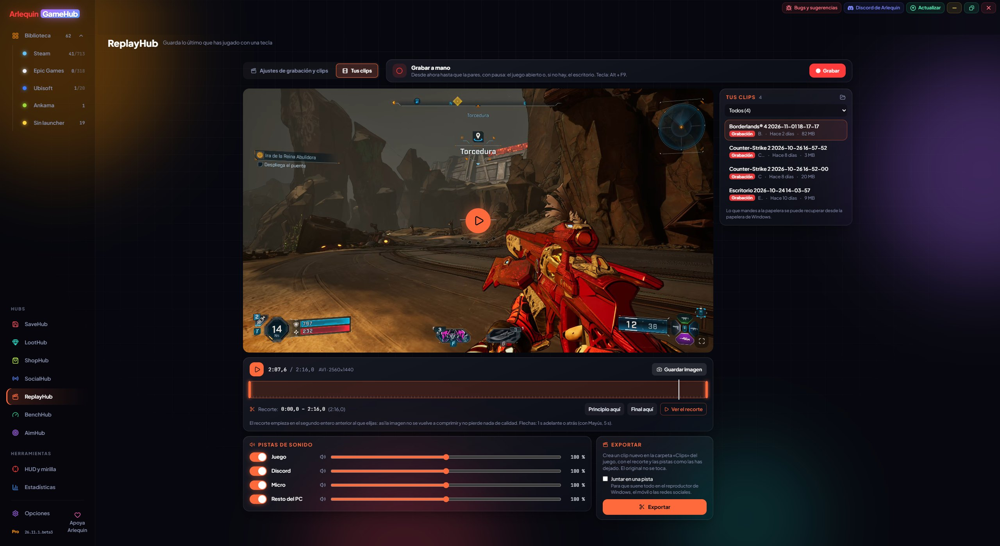

ReplayHub: save what you just played
Press a key and the last part of your game is saved as a video, like with ShadowPlay.
ReplayHub keeps recording the last part of your game in the background and, when you press Alt + F10 (you can change it), saves it as a video. It captures the screen from outside the game without putting anything into it (fine with anti-cheat) and encodes with your graphics card (AMD, NVIDIA or Intel), so it barely uses the processor.
You choose how much time it keeps, the resolution, 30 or 60 FPS, the quality and the format: AV1, HEVC or H.264 (by default AV1 or, if your card lacks it, H.264), in MKV or MP4. Sound comes in parts: the game, Discord, your mic and the rest of the PC. If something goes wrong while saving, what was already written can still be played. Free: all sound in one track and up to 2 minutes per clip; with ArlequinPro, one track per source and up to 2 hours per clip.
Live streams: stream to Twitch, YouTube, Kick, TikTok or another server (with ArlequinPro, to several at once) with scenes, your camera and the Twitch chat on screen. Sign in with Twitch or Kick and the key is filled in for you. Also follower and subscription alerts, instant replay, recording at the same time, stream health per platform, an upload test that recommends the Mbps, importing OBS scenes and a summary when you finish.
Clips: save them with a mouse button or the controller, mark moments (Alt + F5), export them vertically, set the volume of each source, mute the mic with a key (Alt + F6) and upload them to your own cloud, with a link on Google Drive.
How to use it
- ReplayHub is in the side bar, under Hubs: open it and turn it on.
- Alt + F10 saves the clip, in every game (with ArlequinPro, only in the ones you pick and with a length for each).
- Clips go to Videos\ReplayHub, in one folder per game.
- «Manual recording» next to the tabs, and the keys also work in games that grab the keyboard (like Fallout New Vegas).
- It warns you if two keys are the same, and the editor opens long recordings instantly.


Give it a try?
⬇ Direct download 🛍️ Download from Microsoft StoreWindows 10 and 11 (64-bit) · Free · Updates itself